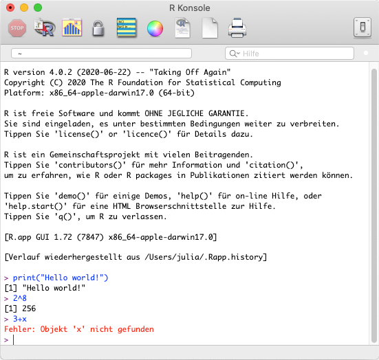

R Konsole¶
Wenn man sich R heruntergeladen und installiert hat, kann man die Sprache bereits ausführen. Nach einem Doppelklick auf das R-Icon öffnen sich die R-Konsole. In dem Fenster wird nach dem Öffnen direkt ein längerer in schwarz formatierter Text angezeigt. Er enthält einige Informationen über R, wie z.B. die Versionsnummer, einen Warnhinweis und ein paar grundlegende Befehle.
Unter diesem schwarzem Text folgt ein lila-fabiges “>” hinter dem in blau ein “|” blinkt. Dies bedeutet, das R nun bereit ist für die Eingabe von Befehlen. Nachdem ein Befehl eingegeben wurde kann man ihn mit Drücken der Eingabetaste (Enter) ausführen.
Der folgenden Screenshot zeigt, wie ich drei Befehle eingegeben und ausgeführt habe:
Der Befehl
print()nimmt eine Zeichenfolge und gibt sie in der Konsole aus, in diesem Fall die Zeichenfolge"Hello world!". Dieser als “Hello World-Programm” bezeichnete Befehl ist ein häufig gewähltes erste Programmierbeispiel in der Einführungsliteratur für Programmiersprachen. Fun-Fact: Auch die Tradition des “Hello world!”-Programms stammt ursprünglich aus den Bel Laboratories.Im zweiten Befehl
2^8habe ich R eine Berechnung durchführen lassen, nämlich 2 hoch 8. R liefert nach einem Druck auf Enter das Ergebnis 256 zurück.Im dritten Befehl sollte ebenfalls eine Berechnung durchgeführt werden
3+x. Hier kommt jedoch kein Ergebnis zurück, sondern nur die Fehlermeldung “Objekt ‘x’ nicht gefunden”. R kann die Berechnung nicht durchführen, weil es den Wert für ´x´ nicht kennt. Ich habe es bisher nicht definiert.
Betrachtet man den Screenshot genauer fallen einige Eigenschaften der Formatierung auf:
Der selbstgeschriebene Text wird in blau dargestellt. So ist er leichter von den in schwarz dargestellten Ausgaben zu unterscheiden. Fehlermeldungen erscheinen in rot und sind damit besonders auffällig.
Vor jeder Ausgabe eines Ergebnisses findet sich eine
[1]. Diese markiert, um das wievielte Element einer Ausgabe es sich handelt. Im obigen Beispiel enthält jede Ausgabe nur ein Element, aber Ausgaben können durchaus auch mehrere Teile haben oder sogar ineinander verschachtelte Elemente aufweisen.
Beim Eingeben von Befehlen in die Konsole kann man mit den Cursortasten (↑ und ↓) durch die bisher eingegebenen Befehle wechseln. Drückt man bsp. ↑ wird der letzte eingegebene Befehl erneut in die Konsole geschrieben.
Manchmal erscheint nach dem Ausführen eines Befehls nicht das erwartete Ergebnis, sondern die Konsole zeigt nur ein ´+´ an. In diesem Fall war der Befehl unvollständig. Tatsächlich kommt es bei der Arbeit mit R recht häufig zu unvollständigen Befehlen, etwa weil eine schließende ) oder ein " vergessen wurde. Man kann in diesem Fall den fehlenden Teil entweder noch ergänzen oder die Ausführung mit der Esc-Taste abbrechen.
Das ist alles schon ganz nett, aber auch ziemlich unkomfortabel. Um richtig mit R zu arbeiten, bietet es sich an auf eine Integrierte Entwicklungsumgebung (Integrated Development Environment, kurz IDE) zurückzugreifen. So eine IDE kann bspw. bei der Organisation von Dateien unterstützen, bietet Hilfe-Funktionen beim Coden, einen Überblick über die Objekte, die sich im Arbeitsspeicher befinden und vieles mehr.